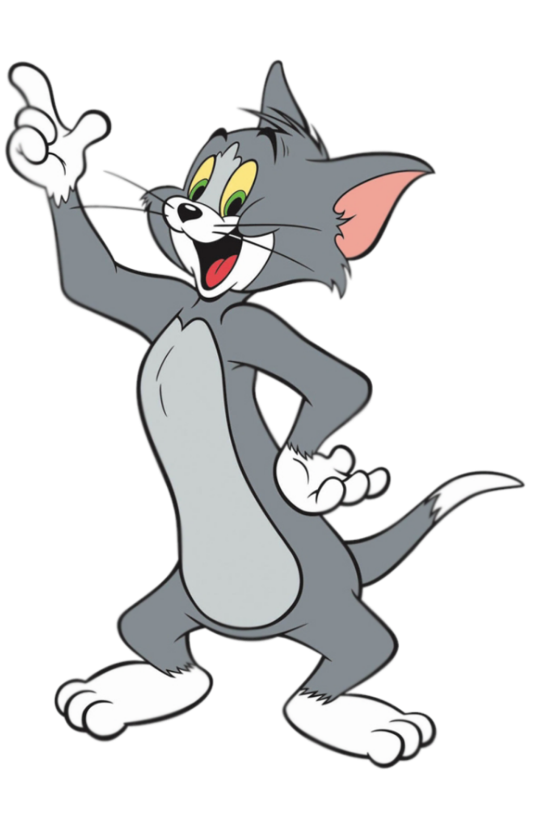
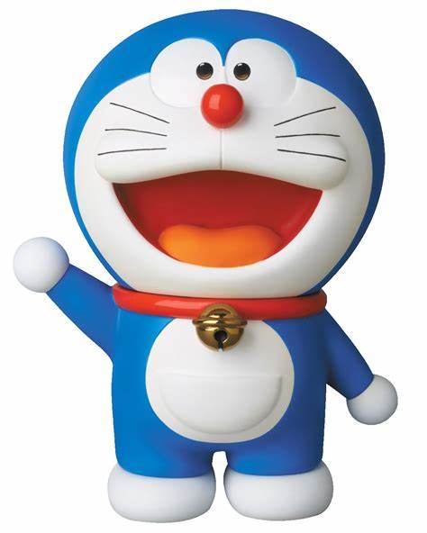
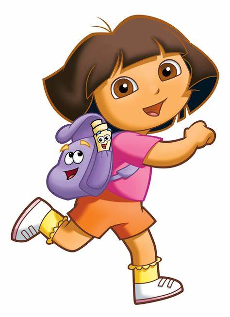
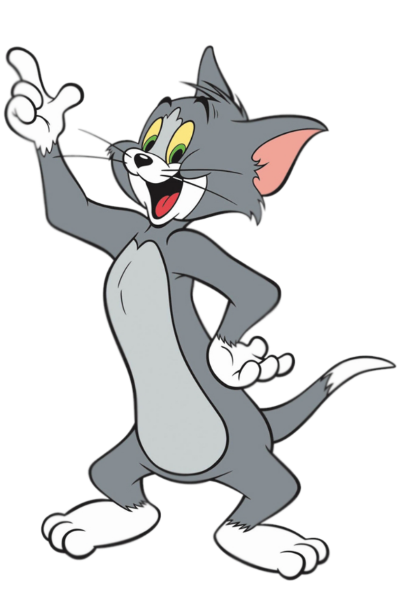
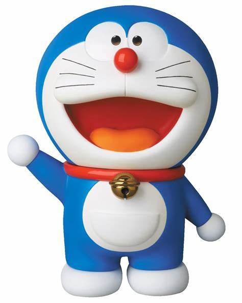
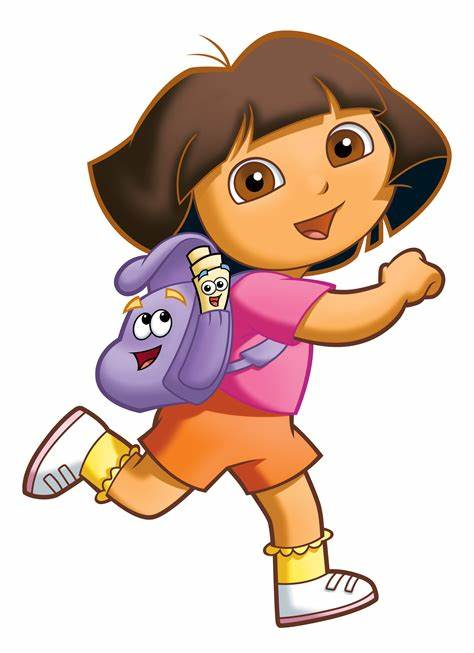

<<<<<<< HEAD


=======
>>>>>>> 28f4dcf0aec57f4b00659fb3cead57507d35bf1b

<<<<<<< HEAD


=======
>>>>>>> 28f4dcf0aec57f4b00659fb3cead57507d35bf1b
Tom and Jerry is an American animated franchise and series of comedy short films created in 1940 by William Hanna and Joseph Barbera. The show revolves around the rivalry between Tom, a cat, and Jerry, a mouse. The cartoons are known for their slapstick humor, cartoon violence, and comedic timing. The original series is composed of 114 shorts, which were produced by Metro-Goldwyn-Mayer from 1940 to 1958. The series was revived in 1960 and continued to produce new episodes until 1967. The franchise has since been adapted into various other media, including television shows, feature films, video games, and more. Would you like me to look up more information on a specific topic related to Tom and Jerry? 😊.